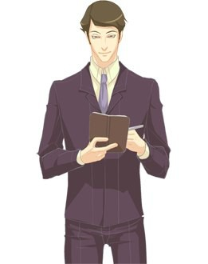

Штирлиц

Портретная галерея:
Вячеслав Тихонов и его Штирлиц в кинофильме "Семнадцать мгновений весны", Ришелье, Томас Алва Эдисон, Артур
Конан-Дойл и его Шерлок Холмс, Василий Ливанов, Грета Гарбо, Вия Артмане, Сергей Образцов, Шарль де Голль, Франсуа
Миттеран, Урхо Кэкконен, Рональд Рейган, Сергей Лихачев, Петр Капица, Корней Чуковский, Джон Голсуорси, Эрих Мария
Ремарк, Илья Эренбург, Юрий Яковлев, Аркадий Райкин, Георгий Товстоногов, Олег Ефремов, Рихард Зорге, Алеша
Карамазов, персонаж романа Ф. Достоевского "Братья Карамазовы", Каренин, персонаж романа Л. Толстого "Анна
Каренина". Самое лучшее описание этого типа - Сомс Форсайт, герой романа Д. Голсуорси "Сага о Форсайтах".
Квадральные признаки:
дельта-квадра; серьезный, рассудительный, аристократ.
Диадные признаки:
рациональный (шизотим), уступчивый, предусмотрительный, индивидуалист.
Индивидуальные признаки:
экстраверт, статик, квестим, негативист, сенсорик, логик, тактик, эмотивный.
Первая функция - уровень организации личности, или принцип существования. Зона уверенности. "Хорошо"
объектная логика - логика объективного мира, объективные обстоятельства, факты. Методики, статистика.
Реальная связь событий. Моя территория
зона уверенности - это порядок. Благодаря сочетанию с третьей функцией (целостность внешней ситуации)
Штирлиц выглядит педантом, человеком несколько суховатым. Внешнее проявление эмоций у него гораздо беднее, чем у
Гамлета или Достоевского. Иногда люди этого типа выглядят несколько статично, хотя в кинофильмах, когда тип актера
совпадает с типом героя, создается какое-то совершенно необыкновенное впечатление. Актеру как будто не приходится
ничего играть - он играет сам себя, наполняя собственное пространство. Как мы уже говорили хорошие режиссеры,
часто, подбирая актера, останавливаются на том, чей тип соответствует типу персонажа. Так получилось и у Т.
Лионозновой, когда на роль Штирлица она выбрала В. Тихонова.
Люди, относящиеся к типу Штирлиц, бывают хорошими руководителями, организаторами, администраторами.
Штирлица легко отличить по военной выправке, подтянутости, хотя он, может быть, никогда в армии-то и не служил.
Штирлиц, как правило, носит костюм и галстук, но даже в джинсах и свитере он выглядит подтянутым и аккуратным.
Объектная логика - это и "моя территория". Штирлиц старается не вмешиваться в жизнь своих близких, однако
он должен обязательно знать, где они находятся и чем занимаются.
По клинической классификации это застревающий тип. Он должен всегда точно знать ситуацию, поэтому при
возникновении новых фактов ему нужны время и информация к размышлению. Он сначала скажет "нет", а потом будет искать
объективные данные. Это человек, который привык делать так, как установлено в его картине мира. Приняв для себя
какой-то определенный порядок, он неукоснительно следует ему. Если предлагают другую дорогу, то ему, чтобы
согласиться, нужно иметь достоверный фактический материал, а не только маршрут на карте. Первая функция
консервативна, а это означает, что "мой мир стабилен", "моя территория стабильна". "Я должен знать, что в мире есть
порядок и там ничто не должно меняться".
Нерациональное отношение других людей к энергии и времени воспринимаются им болезненно негативно. Действие
должно быть рентабельным. Иначе это, по выражению одного Штирлица: "мусор в пространстве". Ни один другой тип не
воспринимает этот аспект реальности так остро.
Человек этого типа никогда не скажет: "Объясните мне". Он скажет: "Покажите мне". Да еще спросит: "А какими
методиками вы пользовались? Какие у вас статистические данные? Где этот факт отражен? А какое у вас образование? Где
вы прописаны? Какое мнение может быть у человека без прописки? А вы, собственно, кто? Какое вы имеете право говорить
о психологии? Вы - психолог?" Ему нужны точные и надежные данные, на которые он мог бы впоследствии опираться, это
уровень организации его личности. Здесь все должно быть надежно: "А кто вам сказал, что это правильно?" - "Мне
сказал академик такой-то". - "Ага, ну тогда ладно". Он должен убедиться, что это не какой-то городской сумасшедший
придумал, необходим авторитет, признанный социумом. Хорошо, если это напечатано в каком-то солидном издании.
Минус-первая функция. Зона игнорирования. Минус-ценности. "Плохо"
субъектная логика - моя собственная логика, мое понимание, объяснение, описание, концепция, теория.
Иерархия представлений о том, что ближе, что дальше, что выше, что ниже. Моя картина мира, мое мировоззрение. Мое
образование, т. е. система моих образов, моя школа
Недоверие к гипотезам и концепциям: "Что вы мне объясняете?! Дайте мне данные, покажите графики,
свидетельства и не надо ничего объяснять". И еще: "Мнения меня не интересуют, скажите, как было на самом деле, мне
нужна достоверная информация, нужны факты, а не мысли по этому поводу". Недаром Шерлок Холмс (Штирлиц по типу ИМ)
блестяще использовал именно дедуктивный метод расследования преступлений, метод анализа и сопоставления фактов.
Вторая функция. Творческая. Уровень функционирования. Зона риска. "Надо"
субъектная сенсорика
Мои ощущения, мое самочувствие, в том числе секс. Штирлицу нравится постоянная смена ощущений. Он с
удовольствием пробует разную пищу, дегустирует новые напитки. Знает, как какую болезнь лечить, может рассказать,
объяснить, дать попробовать.
Вспомним формулу творческой активности: "вторая функция про третью". В данном случае это мое ощущение
времени, мое ощущение гармонии, чувство ситуации. Помните голос за кадром: "Штирлиц поспит двадцать минут и поедет
в Берлин"? Люди этого типа тонко чувствуют время и обладают множеством весьма специфических способностей в этой
сфере.
Например, Н. А. Козырев ввел в науку представление о физических свойствах времени. Какой еще тип может так
воспринимать мир? Подавляющее большинство научного сообщества эту теорию отвергло, слишком уж она не укладывалась в
привычные представления физиков о времени. А, вот, Штирлиц время и пространство чувствует физически ( ? )
Минус-вторая функция. Зона нормативов, эталонов, стереотипов поведения. "Не надо"
объектная сенсорика - форма, действие, движение, поступок, внешность, жесты и мимика. Воля. Мое умение,
сила, влияние, деньги, имидж
Насколько мне известно, эти люди обращают внимание на внешность, но для них это не главное. Штирлиц
одевается очень аккуратно и всегда в соответствии с тем, как принято одеваться в его окружении. На службе он всегда
в мундире. Если в данном месте полагается быть в костюме от Версаче, значит будет костюм от Версаче, если полагается
рабочий комбинезон - будет рабочий комбинезон. А вот экстравагантность - это уже зона "не надо". Поступки и действия
Штирлица, как правило, находятся в соответствии с общепринятыми нормами. Одна и та же дорога на работу, одна и та же
последовательность действий. Штирлиц - большой консерватор и старается придерживаться привычных маршрутов. Что,
однако, не мешает ему быть весьма динамичным в материальной сфере.
Деньги для Штирлица - это не только объектная сенсорика, но и объектная логика. У Штирлица всегда имеется
ровно столько денег, сколько нужно и на то, что нужно. Все учтено, все расписано. А если у него нет денег, то он
знает, откуда и когда они появятся. У Гюго, например, бывает по-разному, бывает страх денег вообще. А вот у Штирлица
обычно все разложено по полочкам.
Третья функция. Принцип самооценки. Место наименьшего сопротивления. "Проблемы"
объектная интуиция - целостность внешней ситуации. Последовательность событий от начала до конца, ряды
событий, расписание. Потенциальные возможности. Программа поведения, уклад, ритм жизни. Сценарий какого-либо
действия, партитура
В фильме "Семнадцать мгновений весны" четко показана третья функция Штирлица: пять семнадцать - информация
к размышлению; шестнадцать тридцать две… и т. д. Это люди, которые четко отслеживают время.
Третья функция - это принцип, по которому человек себя оценивает: "Я хороший" или "Я плохой". Здесь не до
шуток, здесь личность получает энергию: это либо плюс-подкрепление, либо минус.
Люди данного типа не бывают бюрократами, они никогда не будут тянуть время. Если они могут решить вопрос,
то решают сразу. Сказать Штирлицу: "Мы с вами теряем время", - это все равно, что сказать: "Ты плохой человек". Сам
он запросто может кому-нибудь так сказать, но когда это ему говорят, ему плохо, обидно. В работе Штирлица всегда
отличает разумность и последовательность.
Должен быть порядок и распорядок во всем. Для Штирлица, в отличие, скажем, от Наполеона, характерно
стремление к целостной внешней ситуации, ему сложно делать одновременно несколько дел, поэтому подсознательно он
старается все дела выстраивать в определенную последовательность путем расстановки приоритетов. Однако такая
идеализация реальности далеко не всегда оказывается удобной. Мир не желает выстраиваться в линейную
последовательность. В реальности постоянно существует множество параллельных пространств, в которых время течет
по-разному. Возникают напряжения, расплачиваться за которые приходится как всегда собственным временем и большими
внутренними усилиями.
Минус-третья функция. Зона решения проблем
субъектная интуиция - целостность внутренней ситуации. Внутренняя гармония. Состояние, настроение, чувство
времени
решение проблем происходит через смену состояния, изменение настроения. Однако состояния он меняет
неохотно, а внешне это проявляется достаточно редко. Еще реже Штирлиц решается изменить свои внутренние критерии.
Четвертая функция. Суггестивная. Принцип оценки места. Мотивы. "Хочу"
субъектная этика - Мое отношение к людям. Люблю кого-то или что-то - не люблю, нравится - не нравится. Мои
эмоции
суггестивная функция - мое отношение к чему-либо или к кому-либо. Люблю я или не люблю, нравится мне
что-либо или не нравится - знают другие люди. Штирлицу трудно сформировать свое мнение, свое собственное отношение.
В этом ему помогают какие-то объективные данные, печатные издания или хотя бы статья в газете. Я должен на что-то
опираться, чтобы сформировать отношения.
Частенько бывает так: директор - Штирлиц, а его секретарша - Наполеон формирует мнение своего начальника.
Такое, кстати, встречается не так уж и редко. В какой-то момент становится непонятным, кто же там директор?
Штирлиц не всегда с ходу может определить свое отношение к чему-либо. Поэтому выражение "Ты меня любишь?"
лучше формулировать не в вопросительной, а в утвердительной форме. "Я знаю, ты меня любишь!" Люди лучше знают, им
виднее. Нужно, чтобы мне рассказали.
Это может быть отношение к явлению, событию, человеку-профессионалу. "А что он, доктор наук или не доктор?
А кто он по специальности? Покажите мне что-нибудь напечатанное, что вы мне даете написанное от руки?! Вот книга,
это да, хорошо". Для того чтобы выработать свое отношение, человеку нужно обратиться к каким-то "объективным",
заслуживающим доверия источникам.
Хорошее место - это место, про которое известно, что оно хорошее. Отсюда, в частности, заметный
консерватизм Штирлица.
Минус-четвертая функция. Зона страхов. "Не хочу"
объектная этика
страх внешних отношений. Штирлица одиночество не тяготит. Одиночество - это нормально. Он не стремится к
отношениям как Дон Кихот или Гюго. В компании друзей или в рабочем коллективе Штирлиц зачастую оказывается в позиции
наблюдателя, иногда постороннего, иногда заинтересованного. Когда по отношению к нему проявляют какие-то бурные
эмоции, его это тревожит, а иногда даже отталкивает, пугает.